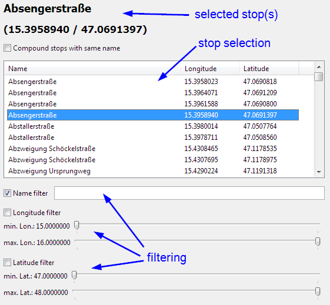
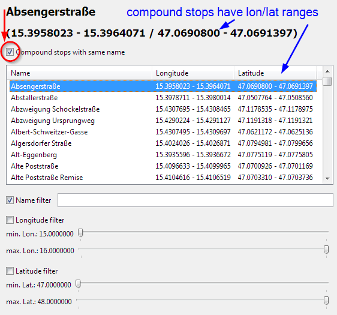

Compound Stop Selector
| (require "compound-stop-selector.rkt") | package: base |


1 Compound Stop Selector
|
superclass: vertical-panel% |
allows selection of one compound stop (which is either a single stop or a compaction of stops of the same name)
constructor
(new compound-stop-selector% [initial-stops initial-stops] [parent parent] [ [selection-id selection-id] [callback callback] [focus focus] [allow-compounds allow-compounds]]) → (is-a?/c compound-stop-selector%) initial-stops : (listof stop?)
parent :
(or/c (is-a?/c frame%) (is-a?/c dialog%) (is-a?/c panel%) (is-a?/c pane%)) selection-id : any/c = #f callback : (any/c compoundable? . -> . void) = #f focus : boolean? = #f allow-compounds : boolean? = #t Creates a new compound-stop-selector% which displays all stops in initial-stops.The selector is placed on parent.
The callback is called with selection-id and the currently selected stop.
If focus is true, the selector’s name filter field is focused.
If allow-compounds is true, the ’Compound stops with same name’ checkbox is displayed and compacting can be activated.
method
(send a-compound-stop-selector get-selected-stop)
→ compoundable? Returns the currently selected stop.
(define compound-stop-selector% (class vertical-panel% (init initial-stops parent [selection-id #f] [callback #f] [focus #f] [allow-compounds #t]) (super-new [parent parent] [alignment '(left top)] [spacing 10]) <fields> <controls> <private-methods> <public-methods> (set-selection-message selected-stop)))
1.1 Public Methods
<public-methods> ::=
(define/public (get-selected-stop) selected-stop)
1.2 Fields
<fields> ::=
(define selected-stop #f) (define stops initial-stops) (define compound-stops (compound-stops-by-name initial-stops)) (define constituents (->list (all-constituents stops))) (define list-sorted-column-index 0) (define show-compounds? #f) (define min-lon (def:min-lon constituents)) (define max-lon (def:max-lon constituents)) (define min-lat (def:min-lat constituents)) (define max-lat (def:max-lat constituents)) (define slider-converter (new slider-converter% [min-lon min-lon] [max-lon max-lon] [min-lat min-lat] [max-lat max-lat]))
1.3 Controls
<controls> ::=
(define selection-message (new message% [label ""] [parent this] [font large-font] [stretchable-width #t])) (define coordinates-message (new message% [label ""] [parent this] [font larger-font] [stretchable-width #t])) (define compound-checkbox (new check-box% [label "Compound stops with same name"] [parent this] [value #f] [callback (lambda (checkbox event) (let ([checked? (send checkbox get-value)]) (when (not (equal? checked? show-compounds?)) (set! show-compounds? checked?) (if show-compounds? (set! stops compound-stops) (set! stops initial-stops)) (populate-list #t))))])) (send this change-children (lambda (children) (if allow-compounds children (filter (lambda (child) (not (equal? compound-checkbox child))) children)))) (define data-list (let ([data-list (new data-list-box% [label ""] [parent this] [choices '()] [columns column-names] [style '(single column-headers)] [min-height 200] [callback (lambda (data-list event) (let ([event-type (send event get-event-type)]) (cond ((equal? event-type 'list-box) (let ([new-stop (selected-stop-from-list)]) (when (not (equal? selected-stop new-stop)) (set! selected-stop new-stop) (set-selection-message selected-stop) (when callback (callback selection-id new-stop))))) ((equal? event-type 'list-box-column) (set! list-sorted-column-index (send event get-column))))))])]) (send data-list set-column-widths '(300 200 400) 100 100) data-list)) (define filter-panel (new vertical-panel% [parent this] [spacing 10] [stretchable-height #f])) (define name-filter-panel (new horizontal-panel% [parent filter-panel] [stretchable-height #f])) (define filter-checkbox (new check-box% [label "Name filter"] [parent name-filter-panel] [value #t])) (define filter-textfield (new text-field% [label ""] [parent name-filter-panel])) (define lon-panel (new vertical-panel% [parent filter-panel] [stretchable-height #f] [alignment '(left top)])) (define lon-checkbox (new check-box% [label "Longitude filter"] [parent lon-panel])) (define min-lon-slider (new slider% [label (send slider-converter min-lon-label slider-min)] [parent lon-panel] [min-value slider-min] [max-value slider-max] [init-value slider-min] [style '(plain horizontal)] [callback (lambda (slider event) (let ([max-lon (send max-lon-slider get-value)]) (when (> (send slider get-value) max-lon) (send slider set-value max-lon))) (send slider set-label (send slider-converter min-lon-label (send slider get-value))))])) (define max-lon-slider (new slider% [label (send slider-converter max-lon-label slider-max)] [parent lon-panel] [min-value slider-min] [max-value slider-max] [init-value slider-max] [style '(plain horizontal)] [callback (lambda (slider event) (let ([min-lon (send min-lon-slider get-value)]) (when (< (send slider get-value) min-lon) (send slider set-value min-lon))) (send slider set-label (send slider-converter max-lon-label (send slider get-value))))])) (define lat-panel (new vertical-panel% [parent filter-panel] [stretchable-height #f] [alignment '(left top)])) (define lat-checkbox (new check-box% [label "Latitude filter"] [parent lat-panel])) (define min-lat-slider (new slider% [label (send slider-converter min-lat-label slider-min)] [parent lat-panel] [min-value slider-min] [max-value slider-max] [init-value slider-min] [style '(plain horizontal)] [callback (lambda (slider event) (let ([max-lat (send max-lat-slider get-value)]) (when (> (send slider get-value) max-lat) (send slider set-value max-lat))) (send slider set-label (send slider-converter min-lat-label (send slider get-value))))])) (define max-lat-slider (new slider% [label (send slider-converter max-lat-label slider-max)] [parent lat-panel] [min-value slider-min] [max-value slider-max] [init-value slider-max] [style '(plain horizontal)] [callback (lambda (slider event) (let ([min-lat (send min-lat-slider get-value)]) (when (< (send slider get-value) min-lat) (send slider set-value min-lat))) (send slider set-label (send slider-converter max-lat-label (send slider get-value))))]))
1.4 Private Methods
(define (set-selection-message stop) (let ([new-label (if stop (name stop) "no stop selected")] [new-coordinates (if stop (format "(~a / ~a)" (format-range (lon-range stop)) (format-range (lat-range stop))) "")]) (send selection-message set-label new-label) (send coordinates-message set-label new-coordinates))) (define (filter-name?) (send filter-checkbox get-value)) (define (filter-lon?) (send lon-checkbox get-value)) (define (filter-lat?) (send lat-checkbox get-value)) (define (list-layout-from-controls) (list-layout (if (filter-name?) (send filter-textfield get-value) "") (if (filter-lon?) (send slider-converter slider->lon (send min-lon-slider get-value)) min-lon) (if (filter-lon?) (send slider-converter slider->lon (send max-lon-slider get-value)) max-lon) (if (filter-lat?) (send slider-converter slider->lat (send min-lat-slider get-value)) min-lat) (if (filter-lat?) (send slider-converter slider->lat (send max-lat-slider get-value)) max-lat) list-sorted-column-index)) (define (populate-list [force? #f]) (let ([old-layout (send data-list get-meta-data)] [new-layout (list-layout-from-controls)]) (when (or force? (not (equal? old-layout new-layout))) (send data-list set-meta-data new-layout) (set-data (~> (filter-stops stops new-layout) (sort-stops (list-layout-sorting new-layout))))))) (define (selected-stop-from-list) (if-let [selected-index (send data-list get-selection)] (send data-list get-data selected-index) #f)) (define (set-data stops) (send/apply data-list set (stop-value-lists stops)) (for ([index (in-naturals 0)] [stop stops]) (send data-list set-data index stop))) (define (sort-stops stops sorting-index) (let ([accessor (eval (second (vector-ref column-mappings sorting-index)) (module->namespace "data-defs.rkt"))]) (sort stops (lambda (stop1 stop2) (let ([value1 (accessor stop1)] [value2 (accessor stop2)]) (if (string? value1) (string<? value1 value2) (range-< value1 value2))))))) (define update-timer (new timer% [interval 100] [notify-callback (lambda () (populate-list))]))
2 Column Mappings
allows quick access to a stop’s name, longitude or latitude by mapping a column number to an accessor function
(define column-mappings #(("Name" name) ("Longitude" lon-range) ("Latitude" lat-range))) (define column-names (map (match-lambda [(list name accessor) name]) (vector->list column-mappings)))
3 Code Structure
<*> ::=
<requires> <column-mappings> <compound-stop-selector%> (provide compound-stop-selector%)
3.1 Required Imports
<requires> ::=
(require racket) (require racket/gui/base) (require racket/struct) (require anaphoric) (require threading) (require sugar/coerce) (require "data-list-box.rkt") (require "slider-converter.rkt") (require "util.rkt") (require "list-layout.rkt") <renamed-data-defs>
3.1.1 Renamed Data Defs
avoids name clashing with local helper functions by prefixing imported variables